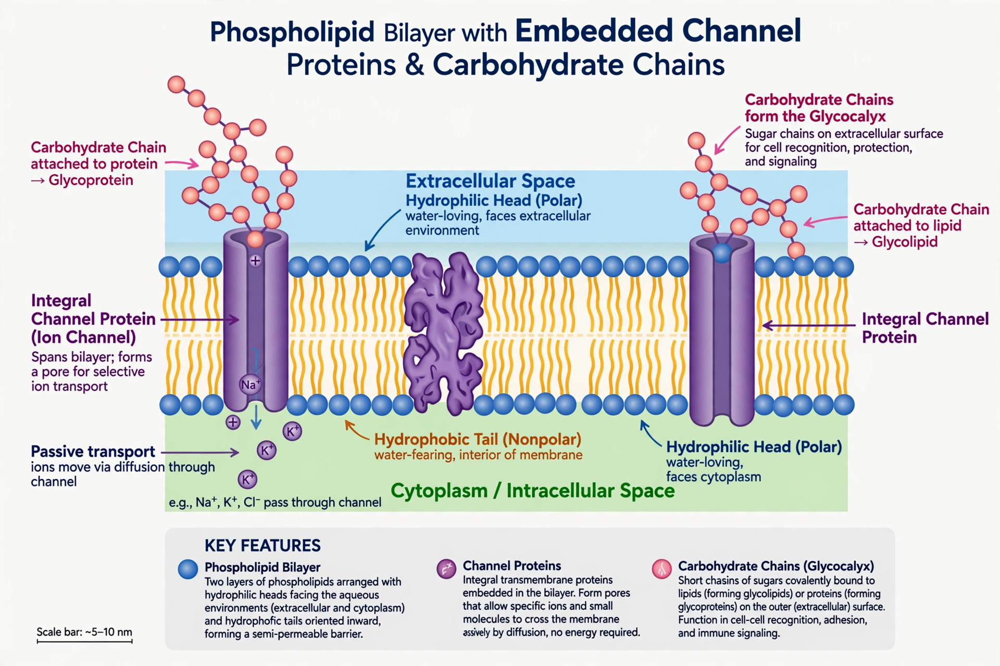

Cell membrane
From Wikipedia, the free encyclopedia
| Cell membrane | |
|---|---|
 | |
| Also called | Plasma membrane |
| Composition | Phospholipid bilayer, proteins, cholesterol, glycolipids, glycoproteins |
| Thickness | ~5–10 nm |
| Model | Fluid mosaic model (Singer & Nicolson, 1972) |
The cell membrane (also known as the plasma membrane) is a biological membrane that separates and protects the interior of a cell from the outside environment. It consists of a lipid bilayer, made up of two layers of phospholipids with cholesterols interspersed, studded with proteins. The membrane is selectively permeable: it controls the movement of substances in and out of the cell.
Structure
Phospholipids spontaneously arrange with hydrophilic heads facing the aqueous environments inside and outside the cell and hydrophobic tails facing each other. The fluid mosaic model of Singer and Nicolson (1972) describes proteins floating within this fluid bilayer like icebergs in a sea — integral proteins spanning the membrane, peripheral proteins attached at the surfaces. Cholesterol modulates fluidity; carbohydrate chains on the outer surface form the glycocalyx, mediating cell recognition and immune identity.
Transport
Small nonpolar molecules diffuse freely; water crosses by osmosis, aided by aquaporins. Facilitated diffusion through channel and carrier proteins moves ions and sugars down their gradients — GLUT transporters, for example, govern cellular uptake of glucose and so connect membrane physiology to blood sugar regulation. Active transport against gradients consumes ATP, as in the Na⁺/K⁺-ATPase that maintains the resting membrane potential essential to neurons in the brain. Bulk transport occurs by endocytosis and exocytosis.
Functions
Beyond compartmentalisation, the membrane anchors the cytoskeleton, enables cell adhesion and communication via receptors and junctions, and generates electrochemical gradients powering ATP synthesis in mitochondria (whose inner membranes are elaborated cell-membrane derivatives). In bacteria and archaea the membrane likewise performs energy transduction; archaeal membranes use ether-linked lipids, sometimes monolayers. Study of membranes is central to understanding signalling gone wrong in diseases such as cancer.